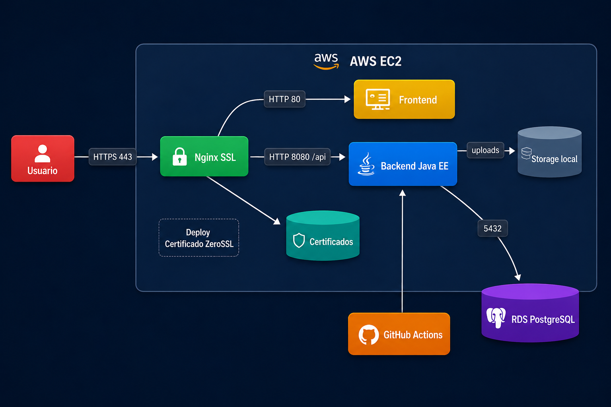
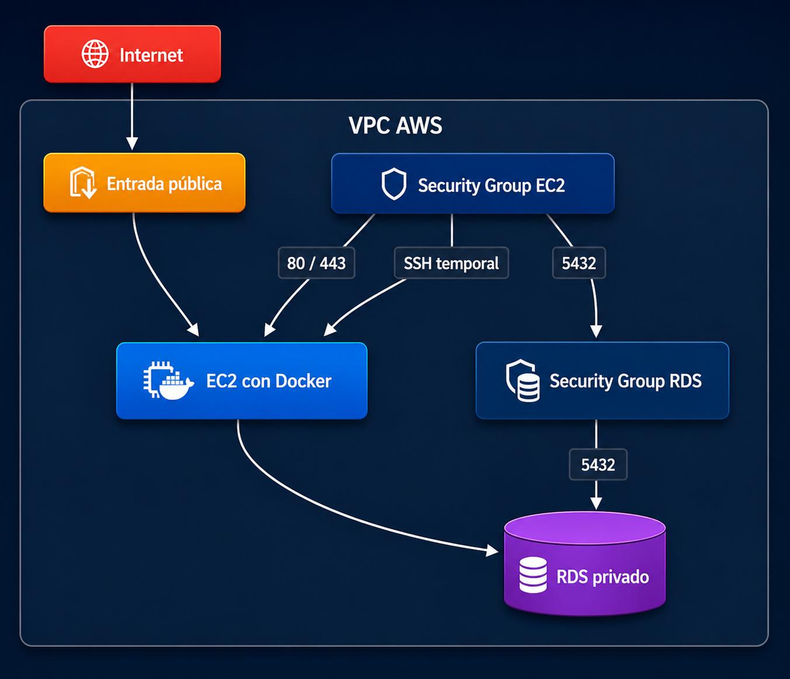
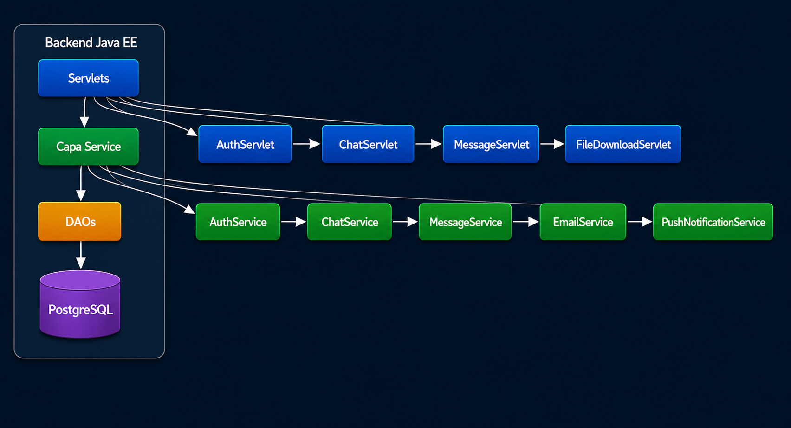
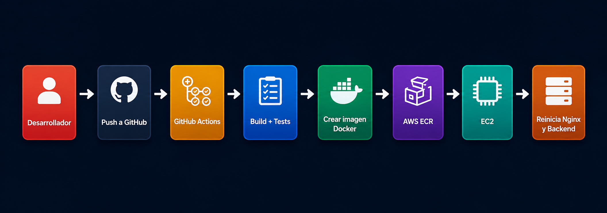

Diagramas de Chat Empresarial JavaEE
Visualización completa de la arquitectura de infraestructura en AWS, topología de red, flujo de despliegue con GitHub Actions y componentes técnicos del sistema de mensajería empresarial.
Diagrama general de la solución mostrando los servicios de AWS: EC2 con Docker Compose, Nginx como reverse proxy SSL, Frontend y Backend Java EE comunicándose, RDS PostgreSQL para base de datos privada, certificado HTTPS de ZeroSSL, y deployment automático desde GitHub Actions.

Estructura de red en AWS mostrando la VPC, subnets, Security Groups, reglas de ingreso/egreso (puertos 80, 443, 5432 y SSH temporal), y cómo se comunican EC2 y RDS de forma segura.

Arquitectura en capas del backend mostrando Servlets, Capa Service con lógica de negocio, DAOs para acceso a datos, modelos de dominio, y persistencia en PostgreSQL con servicios de email y notificaciones.

Pipeline CI/CD automatizado: desarrollador pushea código → GitHub Actions ejecuta build y tests → crea imagen Docker → sube a AWS ECR → EC2 descarga y reinicia Nginx con el nuevo backend.
